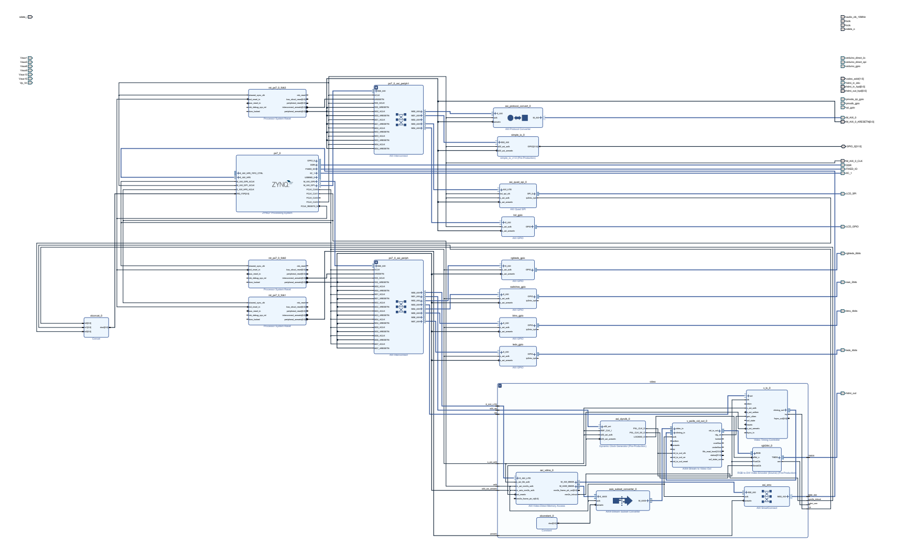
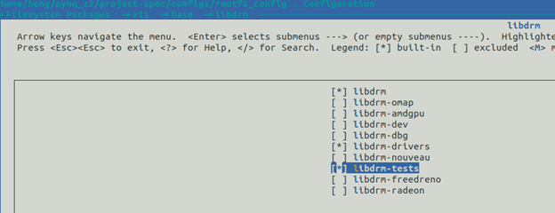
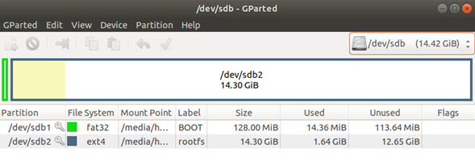
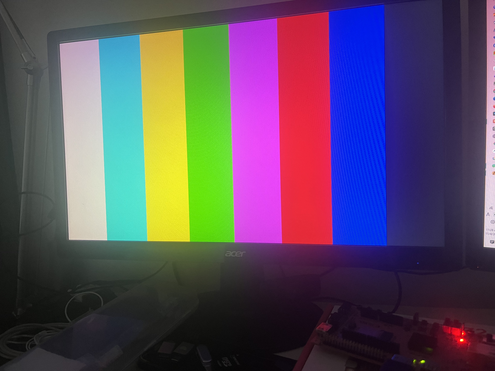
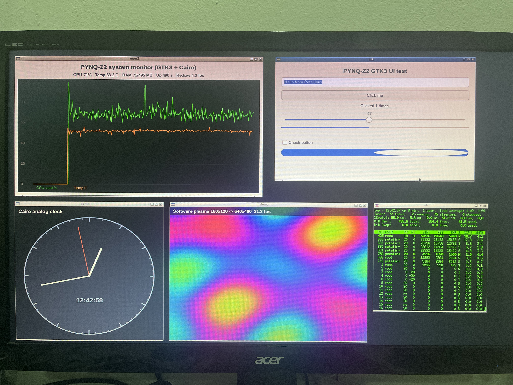

PYNQ-Z2 Video Out: Driving HDMI Displays with Linux DRM/KMS + Framebuffer on PetaLinux 2022.1
1 Introduction
This article shares how to enable Linux (PetaLinux 2022.1) on the PYNQ-Z2 board (Xilinx Zynq-7000 / XC7Z020) to output video directly to an HDMI monitor just like a personal computer. The system exposes both standard graphics device nodes: /dev/dri/card0 (DRM/KMS) and an emulated /dev/fb0 (Framebuffer) ready for immediate use.
Those familiar with Zynq-7000 know that the chip lacks a dedicated hardware GPU. So how do we get video output? The answer lies in the programmable logic (PL / FPGA): we construct a custom Display Controller Pipeline on the FPGA fabric, allowing the AXI VDMA controller to fetch pixel data from DDR3 memory and stream it out directly as HDMI signals.
2 Hardware and System Overview
2.1 Specifications & Tools
| Component | Specification / Version | Description |
|---|---|---|
| Target Board | PYNQ-Z2 | Xilinx Zynq-7020 SoC (XC7Z020-1CLG400C) |
| Vivado | 2022.1 | Block Design assembly & FPGA bitstream synthesis |
| PetaLinux | 2022.1 | Embedded Linux BSP and Rootfs builder |
| Host OS | Ubuntu 22.04 LTS | Host development environment for PetaLinux 2022.1 |
| Linux Kernel | 5.15 LTS (Digilent Rebase) | Branch digilent_rebase_v5.15_LTS_2022.1 |
| Pixel Format | RG24 = DRM_FORMAT_RGB888 |
24 bpp (3 bytes per pixel: Red, Green, Blue) |
2.2 Data Transfer Flow (From Application to HDMI Display)
When running a graphical application under Linux, pixel buffers travel through the hardware in the following sequence:
- Application → DDR3 RAM (Framebuffer):
Userspace applications or kernel drivers write RGB pixel data into a pre-allocated contiguous memory region in DDR3 RAM (CMA). - DDR3 RAM → AXI VDMA (via AXI HP Port):
TheAXI VDMAIP core on the FPGA autonomously fetches pixel buffers from DDR3 memory via the high-bandwidth AXI HP0 (High Performance) memory-mapped interface. - AXI VDMA → Stream Converter (via AXI4-Stream):
VDMA converts memory-mapped buffers into a continuous raster stream (AXI4-Stream: MM2S), forwarding pixels toaxis_subset_converterandv_axi4s_vid_out. - Video Out Block → Video Timing & TMDS Encoder:
Thev_axi4s_vid_outblock synchronizes pixel streams with timing signals (HSync, VSync, Data Enable) generated byv_tc(Video Timing Controller) driven by the Pixel Clock fromaxi_dynclk, generating a parallel Parallel RGB + Sync bus. - TMDS Encoder → HDMI Port → Monitor:
Thergb2dviblock accepts parallel RGB data along with the pixel clock and 5x serial clock, encoding them into differential TMDS high-speed serial channels routed to the PYNQ-Z2 HDMI TX connector.
graph TD
subgraph US["1. Linux Userspace"]
APP["Applications / GUI
(fbdev / DRM apps)"]
end
subgraph KS["2. Linux Kernel"]
DRM["DRM Subsystem & fbdev Emulation
(xlnx-drm + Digilent Drivers)"]
end
DDR[("DDR3 RAM
(CMA Framebuffer)")]
subgraph PL["3. PL Video Pipeline (FPGA)"]
VDMA["AXI VDMA
(Fetches frames from DDR3)"]
CONV["Format Converter
(axis_subset_converter)"]
VOUT["Video Out Bridge
(v_axi4s_vid_out)"]
DVI["rgb2dvi
(TMDS Encoder)"]
CTRL["Timing & Clock Blocks
(v_tc + axi_dynclk)"]
end
HDMI["4. HDMI Monitor"]
%% Data Flow
APP ==>|"1. Write frame to buffer"| DDR
DDR ==>|"2. VDMA fetches via AXI HP0"| VDMA
VDMA ==>|"3. Forward AXI4-Stream"| CONV
CONV ==>|"RGB Stream"| VOUT
VOUT ==>|"4. Parallel RGB + Sync"| DVI
DVI ==>|"5. TMDS Signals"| HDMI
%% Control Flow
APP -.->|"mmap / ioctl"| DRM
DRM -.->|"Control VDMA via AXI-Lite"| VDMA
DRM -.->|"Configure Clock & Timing"| CTRL
CTRL -.->|"Pixel Clock & H/V Sync"| VOUT
CTRL -.->|"Serial Clock (5x)"| DVI
classDef mainData stroke:#e8590c,stroke-width:3px;
classDef ctrlFlow stroke:#888,stroke-dasharray: 3 3;
3 FPGA Hardware Design (Vivado)
On the FPGA (PL) side, IP cores are interconnected as illustrated in the block diagram below:
graph LR
subgraph PS["1. Processing System (PS)"]
DDR[("DDR3 RAM
(Framebuffer)")]
I2C["I2C0
(Reads EDID via DDC)"]
end
subgraph PL["2. FPGA Logic (PL - Hierarchy: video)"]
VDMA["AXI VDMA
(axi_vdma_0)"]
CONV["Format Converter
(axis_subset_converter)"]
VOUT["Video Out Bridge
(v_axi4s_vid_out_0)"]
DVI["TMDS Encoder
(rgb2dvi_0)"]
VTC["Timing Controller
(v_tc_0)"]
DYN["Dynamic Clock
(axi_dynclk)"]
end
HDMI["3. Display
(HDMI TX Port)"]
%% Data Flow
DDR ==>|"1. Read Frame Data (AXI HP)"| VDMA
VDMA ==>|"2. AXI4-Stream"| CONV
CONV ==>|"3. Format RGB Bus"| VOUT
VOUT ==>|"4. Parallel RGB"| DVI
DVI ==>|"5. TMDS Signals"| HDMI
%% Control & Timing
I2C -.->|"Read EDID (DDC)"| HDMI
DYN -.->|"Pixel Clock"| VTC
DYN -.->|"Pixel & 5x Serial Clock"| DVI
VTC -.->|"H/V Sync Signals"| VOUT
classDef mainFlow stroke:#e8590c,stroke-width:3px;
classDef ctrlFlow stroke:#888,stroke-dasharray: 3 3;
Complete project Vivado Block Design:

It is strongly recommended to encapsulate all video pipeline IP cores inside a Hierarchy named video. When PetaLinux auto-generates the Device Tree, it automatically prefixes labels accordingly (e.g., video_axi_vdma_0, video_axi_dynclk_0, video_v_tc_0), making device tree customization in later steps seamless.
Role of Each Component in the Pipeline:
- DDR3 RAM (Framebuffer): Primary system memory storing pixel values written by userspace applications or the OS.
- AXI VDMA (
axi_vdma_0): High-performance Direct Memory Access engine in MM2S mode converting raster buffers into AXI4-Stream data. - Format Converter (
axis_subset_converter): Rearranges color channel bit positions (R, G, B) or truncates unused padding bytes (e.g. converting 32-bit to 24-bit). - Timing Controller (
v_tc_0): Generates industry-standard video raster synchronization pulses (HSync, VSync, Data Enable). - Dynamic Clock Generator (
axi_dynclk- Digilent IP): Dynamically synthesizes the required Pixel Clock and 5x Serial Clock frequencies via DRP. - Video Out Bridge (
v_axi4s_vid_out_0): Bridges AXI4-Stream to parallel RGB while locking pixels to clock-exact HSync/VSync pulses. - TMDS Encoder (
rgb2dvi_0- Digilent IP): Encodes parallel RGB and clock signals into differential TMDS serial pairs driving the physical HDMI connector.
4 Building Embedded Linux with PetaLinux 2022.1
4.1 Initializing the PetaLinux Project
Initialize the PetaLinux toolchain and import the hardware description (.xsa) exported from Vivado:
source ~/petalinux_2022_1/settings.sh
cd ~/
# Create Zynq project
petalinux-create --type project --template zynq --name pynq_z2
cd pynq_z2/
# Point to folder containing the exported .xsa
petalinux-config --get-hw-description=/home/hong/Desktop/pynq_z2/When the ncurses configuration menu opens, configure these three critical items:
- DTG Settings → Kernel Bootargs
- Uncheck generate boot args automatically.
- Select user set kernel bootargs and specify:
console=ttyPS0,115200 root=/dev/mmcblk0p2 rw earlyprintk quiet rootfstype=ext4 rootwait cma=256M
cma=256M?Contiguous Memory Allocator (CMA) pool size is crucial. When allocating multi-buffered high-definition display dumb buffers via DRM, insufficient CMA memory will trigger immediate allocation failures. High resolutions require large physically contiguous buffers so VDMA can stream without stutter.
- Image Packaging Configuration → Root filesystem type:
Select EXT4 (SD/eMMC/SATA/USB). - Disable Copy final images to tftpboot since we are booting directly from an SD card.
4.2 Adding Digilent HDMI Kernel Modules
Incorporate the Digilent display drivers (linux-digilent branch digilent_rebase_v5.15_LTS_2022.1) to control the clock synthesizer and HDMI transmitter:
# Create module skeletons
petalinux-create -t modules --name clk-dglnt-dynclk --enable
petalinux-create -t modules --name digilent-hdmi --enable
# Copy driver source files
cp ~/Desktop/pynq_z2/clk-dglnt-dynclk.c ~/pynq_z2/project-spec/meta-user/recipes-modules/clk-dglnt-dynclk/files/clk-dglnt-dynclk.c
cp ~/Desktop/pynq_z2/digilent-hdmi.c ~/pynq_z2/project-spec/meta-user/recipes-modules/digilent-hdmi/files/digilent-hdmi.cOriginal source files can be retrieved directly from the Digilent Linux repository:
| Module Name | Functional Description |
|---|---|
clk-dglnt-dynclk |
Common Clock Framework driver communicating with axi_dynclk over DRP to synthesize target pixel clock frequencies dynamically. |
digilent-hdmi |
DRM Encoder/Connector driver for HDMI that queries EDID data over I2C0, determines display capabilities, and automatically programs the clock. |
4.3 Device Tree Configuration (system-user.dtsi)
Edit project-spec/meta-user/recipes-bsp/device-tree/files/system-user.dtsi to bind the PL hardware with Linux DRM:
/include/ "system-conf.dtsi"
#include <dt-bindings/gpio/gpio.h>
/* Enable I2C0 bus for DDC EDID readout */
&i2c0 {
clock-frequency = <100000>;
status = "okay";
};
&amba_pl {
/* HDMI DRM Encoder endpoint */
digilent_hdmi {
compatible = "digilent,hdmi";
clocks = <&video_axi_dynclk_0>;
clock-names = "clk";
digilent,edid-i2c = <&i2c0>;
digilent,fmax = <142000>;
port@0 {
hdmi_ep: endpoint {
remote-endpoint = <&pl_disp_ep>;
};
};
};
/* PL Display Controller (Xilinx DRM Controller) */
xlnx_pl_disp {
compatible = "xlnx,pl-disp";
dmas = <&video_axi_vdma_0 0>;
dma-names = "dma0";
xlnx,vformat = "RG24"; /* Use "XR24" if targeting XRGB8888 32 bpp */
xlnx,bridge = <&video_v_tc_0>;
port@0 {
pl_disp_ep: endpoint {
remote-endpoint = <&hdmi_ep>;
};
};
};
};
/* VDMA DMA Addressing range */
&video_axi_vdma_0 {
dma-ranges = <0x00000000 0x00000000 0x40000000>;
};
/* Dynamic Clock Synthesizer */
&video_axi_dynclk_0 {
compatible = "dglnt,axi-dynclk";
#clock-cells = <0>;
clocks = <&clkc 15>;
};
/* VTC DRM Bridge */
&video_v_tc_0 {
compatible = "xlnx,bridge-v-tc-6.1";
xlnx,pixels-per-clock = <1>;
};4.4 Kernel Configuration (bsp.cfg)
Append the following configuration flags to project-spec/meta-user/recipes-kernel/linux/linux-xlnx/bsp.cfg to activate DRM, fbdev emulation, and console support:
| Configuration Symbol | Purpose |
|---|---|
CONFIG_COMMON_CLK_DGLNT_DYNCLK=y |
Enables Digilent Dynamic Clock driver. |
CONFIG_DRM_XLNX_BRIDGE=yCONFIG_DRM_XLNX_BRIDGE_VTC=y |
Enables Xilinx DRM Bridge and Video Timing Controller bridge. |
CONFIG_DRM_XLNX_PL_DISP=y |
Primary display controller driver for FPGA logic (xlnx_pl_disp). |
CONFIG_DRM_DIGILENT_HDMI=y |
Digilent HDMI Transmitter DRM encoder driver. |
CONFIG_DRM_FBDEV_EMULATION=y |
Enables legacy /dev/fb0 framebuffer emulation on DRM. |
CONFIG_DRM_FBDEV_OVERALLOC=100 |
Allocates double the virtual screen height for smooth double buffering. |
CONFIG_FB=yCONFIG_FB_CFB_*=yCONFIG_FB_SYS_*=yCONFIG_FB_DEFERRED_IO=y |
Core Framebuffer subsystem primitives. |
CONFIG_FRAMEBUFFER_CONSOLE=yCONFIG_FONT_8x8=yCONFIG_FONT_8x16=y |
Renders Linux terminal console and Tux penguin boot logo on the monitor. |
CONFIG_I2C_XILINX=y |
I2C controller driver for reading EDID data. |
4.5 Enabling Testing Utilities in Rootfs
Open rootfs configuration:
petalinux-config -c rootfsNavigate to Filesystem Packages → x11 → base and enable:
libdrmlibdrm-driverslibdrm-tests(provides diagnostic tools likemodetest)

4.6 Compilation and Packaging
# Build the entire OS
petalinux-build
# Package FSBL, Bitstream (.bit), and U-Boot into BOOT.BIN
petalinux-package --boot --force \
--fsbl images/linux/zynq_fsbl.elf \
--fpga images/linux/*.bit \
--u-boot4.7 Preparing the SD Card
Partition the micro SD card into two partitions using gparted:
| Partition | Size | Format | Label | Contents |
|---|---|---|---|---|
| Partition 1 | ~128 MB | FAT32 | BOOT |
BOOT.BIN, image.ub, boot.scr |
| Partition 2 | Remaining space | ext4 | rootfs |
Extracted rootfs.tar.gz |

# Mount directories
sudo mkdir -p /mnt/sdb1 /mnt/sdb2
# Copy bootloader files to Partition 1
sudo mount /dev/sdb1 /mnt/sdb1
cd ~/pynq_z2/images/linux/
sudo cp BOOT.BIN image.ub boot.scr /mnt/sdb1/
sync
sudo umount /mnt/sdb1
# Extract root filesystem to Partition 2
sudo mount /dev/sdb2 /mnt/sdb2
sudo tar xzf rootfs.tar.gz -C /mnt/sdb2/
sync
sudo umount /mnt/sdb25 Real Hardware Testing on PYNQ-Z2
- Set the board jumper (JP1) to SD.
- Connect the HDMI cable from the PYNQ-Z2 HDMI TX port to your monitor.
- Connect the Micro-USB cable to your PC for serial console access (115200 baud).
- Switch on the board power.
Log in using username petalinux (the system prompts for a new password on first login):
pynq_z2 login: petalinux
You are required to change your password immediately (administrator enforced).
New password:
Retype new password:5.1 Validating DRM Graphics Subsystem
# Check DRM device nodes
pynq_z2:~$ ls -l /dev/dri/
drwxr-xr-x 2 root root 60 Jan 1 1970 by-path
crw-rw---- 1 root video 226, 0 Jan 1 1970 card0
# Check active kernel modules
pynq_z2:~$ lsmod
digilent_hdmi 16384 0 - Live 0x00000000 (O)
clk_dglnt_dynclk 16384 1 - Live 0x00000000 (O)
# Inspect dmesg kernel boot logs
pynq_z2:~$ dmesg | grep -Ei 'drm|hdmi|v_dma|v_tc|dynclk'
platform amba_pl:xlnx_pl_disp: Fixing up cyclic dependency with amba_pl:digilent_hdmi
xlnx,bridge-vtc 43c10000.v_tc: vtc ppc = 1
xlnx,bridge-vtc 43c10000.v_tc: Xilinx VTC IP version : 0x0602000c
xlnx,bridge-vtc 43c10000.v_tc: Xilinx VTC DRM Bridge driver probed
clk_dglnt_dynclk: loading out-of-tree module taints kernel.
xlnx-drm xlnx-drm.0: bound amba_pl:xlnx_pl_disp (ops 0xc083df10)
xlnx-drm xlnx-drm.0: bound amba_pl:digilent_hdmi (ops digilent_hdmi_component_ops [digilent_hdmi])
xlnx-pl-disp amba_pl:xlnx_pl_disp: [drm] fb0: xlnxdrmfb frame buffer device
[drm] Initialized xlnx 1.0.0 20130509 for amba_pl:xlnx_pl_disp on minor 05.2 Inspecting Framebuffer Node (/dev/fb0)
# Query driver identifier
pynq_z2:~$ cat /sys/class/graphics/fb0/name
xlnxdrmfb
# Query virtual viewport size (width, virtual height)
pynq_z2:~$ cat /sys/class/graphics/fb0/virtual_size
1680,2100
# Query bits per pixel
pynq_z2:~$ cat /sys/class/graphics/fb0/bits_per_pixel
24
# Query row stride in bytes
pynq_z2:~$ cat /sys/class/graphics/fb0/stride
50406 Screen Rendering Test (Color Bars)
6.1 Installing the Cross-Compilation SDK
source ~/petalinux_2022_1/settings.sh
cd ~/pynq_z2
# Generate SDK
petalinux-build --sdk
# Install SDK to local directory
chmod +x images/linux/sdk.sh
./images/linux/sdk.sh -d "$HOME/Desktop/pynq_z2/sdk"6.2 Source Code: colorbar.c
#include <stdio.h>
#include <stdint.h>
#include <stdlib.h>
#include <fcntl.h>
#include <unistd.h>
#include <sys/mman.h>
#include <sys/ioctl.h>
#include <linux/fb.h>
static void write_pixel(unsigned char *p,
const struct fb_var_screeninfo *v,
uint8_t r, uint8_t g, uint8_t b)
{
uint32_t pixel = 0;
pixel |= ((uint32_t)(r >> (8 - v->red.length))) << v->red.offset;
pixel |= ((uint32_t)(g >> (8 - v->green.length))) << v->green.offset;
pixel |= ((uint32_t)(b >> (8 - v->blue.length))) << v->blue.offset;
unsigned int bytes = v->bits_per_pixel / 8;
for (unsigned int i = 0; i < bytes; ++i)
p[i] = (pixel >> (8 * i)) & 0xFF;
}
int main(void)
{
int fd = open("/dev/fb0", O_RDWR);
if (fd < 0) {
perror("Failed to open /dev/fb0");
return 1;
}
struct fb_var_screeninfo v;
struct fb_fix_screeninfo f;
if (ioctl(fd, FBIOGET_VSCREENINFO, &v) < 0 ||
ioctl(fd, FBIOGET_FSCREENINFO, &f) < 0) {
perror("Framebuffer ioctl error");
close(fd);
return 1;
}
printf("Resolution: %u x %u\n", v.xres, v.yres);
printf("BPP: %u, Stride: %u bytes, Memory Size: %u bytes\n",
v.bits_per_pixel, f.line_length, f.smem_len);
unsigned char *fb = mmap(NULL, f.smem_len,
PROT_READ | PROT_WRITE,
MAP_SHARED, fd, 0);
if (fb == MAP_FAILED) {
perror("mmap failed");
close(fd);
return 1;
}
/* Standard 8-color test bar */
static const uint8_t rgb[8][3] = {
{255, 255, 255}, /* White */
{ 0, 255, 255}, /* Cyan */
{255, 255, 0}, /* Yellow */
{ 0, 255, 0}, /* Green */
{255, 0, 255}, /* Magenta */
{255, 0, 0}, /* Red */
{ 0, 0, 255}, /* Blue */
{ 0, 0, 0} /* Black */
};
unsigned int bytes_per_pixel = v.bits_per_pixel / 8;
for (unsigned int y = 0; y < v.yres; ++y) {
for (unsigned int x = 0; x < v.xres; ++x) {
unsigned int bar = (x * 8U) / v.xres;
size_t offset = (size_t)y * f.line_length
+ (size_t)x * bytes_per_pixel;
if (offset + bytes_per_pixel > f.smem_len)
continue;
write_pixel(fb + offset, &v,
rgb[bar][0], rgb[bar][1], rgb[bar][2]);
}
}
printf("Color Bars rendered successfully!\n");
munmap(fb, f.smem_len);
close(fd);
return 0;
}6.3 Cross-Compiling and Executing
# Source SDK environment
source ~/Desktop/pynq_z2/sdk/environment-setup-cortexa9t2hf-neon-xilinx-linux-gnueabi
# Compile colorbar test binary
cd ~/Desktop/pynq_z2/hdmi_test/colorbar
make clean && make
# Transfer to target board
scp colorbar petalinux@<BOARD_IP>:~
# Execute on PYNQ-Z2
pynq_z2:~$ sudo ./colorbar
7 Upgrading from RGB888 to XRGB8888
Initial implementations targeted RGB888 (24 bpp), matching the 24-bit VDMA bus. However, when deploying higher-level Linux software—such as the X11 / Xorg Window Server, SDL, or LVGL—most libraries perform far more efficiently when configured for 32-bit aligned XRGB8888 formats.
| Feature Comparison | Standard: RGB888 (24 bpp) | Optimized: XRGB8888 (32 bpp) |
|---|---|---|
xlnx,vformat in Device Tree |
"RG24" |
"XR24" |
| VDMA Stream Bus | 24-bit (3 bytes: R, G, B) | 32-bit (4 bytes: X, R, G, B) |
axis_subset_converter Role |
Color component reordering | Strips padding byte X to reduce 4-byte stream to 3-byte TMDS input |
| Application Compatibility | Memory-conserving barebones framebuffers | Optimal for X11 Desktops, Qt, and modern UI toolkits |
Running full X11 Desktop output on the HDMI monitor:

8 Summary
Although the Zynq-7000 SoC does not feature an integrated GPU, the flexibility of the FPGA fabric allows us to assemble a custom hardware Display Controller Pipeline, delivering full Linux DRM/KMS and Framebuffer capabilities.
8.1 Engineering Considerations
- Rendering Throughput: Rendering is executed via software rendering across dual ARM Cortex-A9 cores. Heavy 3D graphics will be constrained by CPU load, but 2D sensor dashboards, industrial HMIs, and lightweight GUI toolkits like LVGL perform reliably.
- Memory Bandwidth: High resolutions (e.g., 1080p) require continuous AXI HP0 DMA transactions to fetch frames from DDR3. Real-world systems should budget DDR3 memory bandwidth accordingly.
8.2 Project Source Code
Access the complete Vivado block designs, device tree files, and test code on GitHub:
https://github.com/wichayen/pynq_z2/tree/main/video